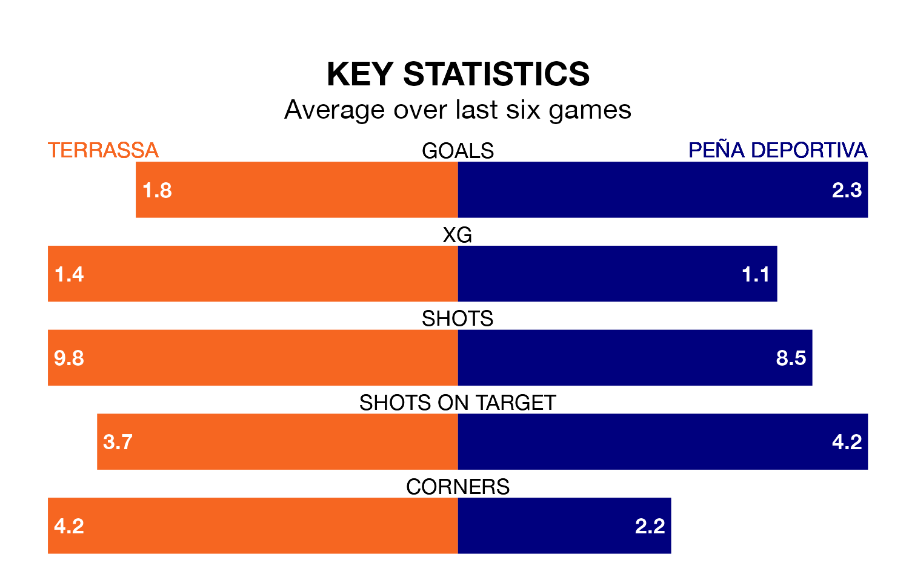

Terrassa host Peña Deportiva on Sunday in the Segunda División RFEF Group 3.
In their last league match, on April 28, Terrassa beat Manresa 2-1 away, with their goal scored by Aythami Perera García (two).
Peña Deportiva also won, 4-1 at home against La Nucía, with Víctor Barroso Maya scoring their goals.
With 48 goals in 33 games so far this season, Peña Deportiva are scoring more than average in the league with 1.5 goals per game. But they are conceding more than average too, letting in 57 goals at a rate of 1.7 per game.
Terrassa are also above average scorers, with 1.3 goals per game, compared to a league average of 1.2. They have conceded 1.2 goals per game.
The home team are sixth in the table after 33 games, of which they have won 13 and drawn 10, earning 49 points.
The visitors are five places behind Terrassa in 11th, with 12 wins and eight draws putting them on 44 points.
Terrassa are in good form in the Segunda División RFEF Group 3, with four wins and a draw from their last six games.
With three wins and two draws over that period, Peña Deportiva's form is slightly worse – they have taken 11 points from 18, compared to the hosts' 13.
In the last five years, Terrassa and Peña Deportiva have played each other on five occasions. Terrassa won one of them and Peña Deportiva the other.
On average, Terrassa scored 0.6 goals and Peña Deportiva 1.4 in those matches.
Their last meeting was on January 7, when Terrassa won 1-0 away.
Updated: 10:44 (UTC), 30/04/24